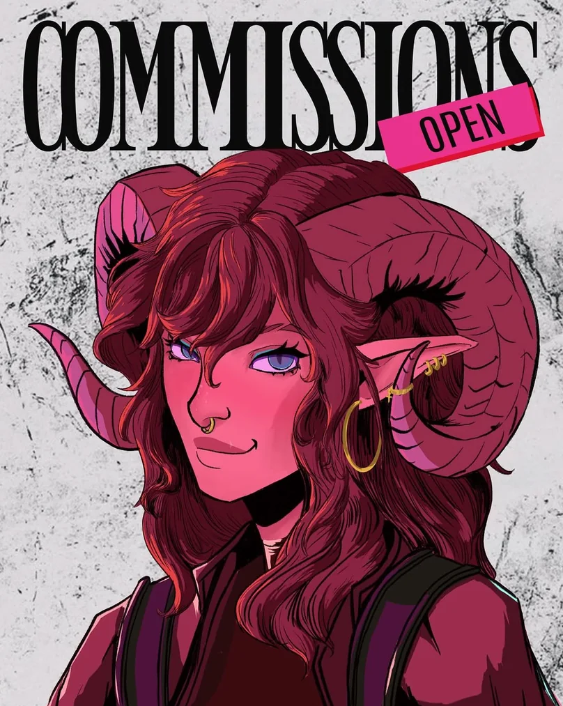
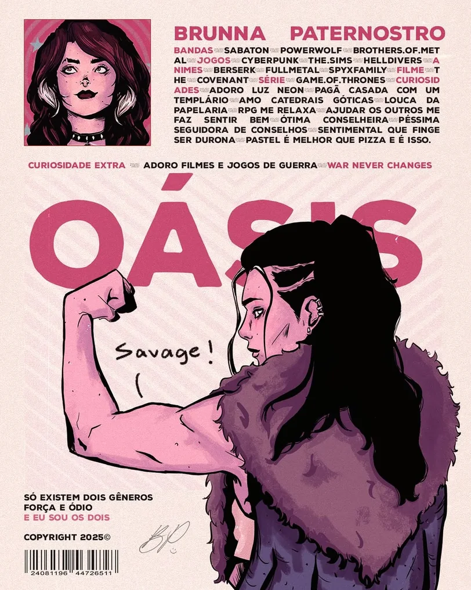
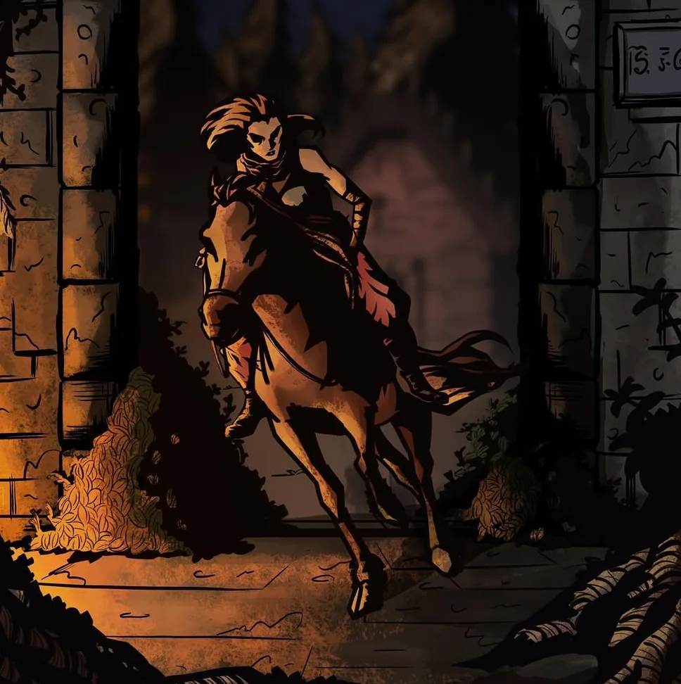

01 os links importantes
Onde fica cada coisa
seu painel (só você e o Wellington)
Acesso do painel (o Wellington cria um definitivo pra você depois)
Usuário: brunna
Senha: brupater
02 o que o site tem
O roteiro, cena por cena
O site é uma página só, montada como um filme: cada parte é uma "cena", com cortes de tela cheia entre elas.
- Cena 01 · AberturaSua arte em tela cheia com barras de cinema, um zoom lento, seu nome em letras de pôster e a etiqueta do status (Commissions open, Lista de espera ou Comms closed), igual à do seu post.
- Créditos iniciaisOs seus links (Instagram, Threads e atalhos pras encomendas e pra agenda), no estilo dos créditos de abertura de um filme.
- Cena 02 · Ficha da personagemUma seção inspirada no seu pôster Oásis: retrato, nome, bandas, jogos, animes, curiosidades, palavra gigante e código de barras.
- InterlúdioUm corte em tela cheia com uma frase grande. A imagem se move devagar enquanto a pessoa rola a página.
- Cena 03 · PortfólioA galeria com filtros (Pôsteres, Personagens, Cenas, Estudos). Tocando numa arte, ela abre em tela cheia e dá pra passar pras próximas.
- Cena 04 · AgendaO quadro de status, a contagem pra próxima abertura, as vagas em estrelinhas, um calendário com as datas marcadas e a fila de produção mostrando em que etapa está cada encomenda.
- InterlúdioOutro corte de cinema, com o seu caderno de campanha.
- Cena 05 · Crie seu personagemA calculadora de encomendas: a pessoa escolhe enquadramento, acabamento, quantos personagens, fundo e quantidade, vê o preço na hora e manda o pedido pronto pra você.
- Cena 06 · A Bru respondePerguntas frequentes: pagamento, reembolso, acabamentos, prazos.
- FimO "FIM" de filme, com os créditos e a sua assinatura.
03 o estilo
Pôster de cinema
O nome do estilo é Pôster de Cinema. Ele foi tirado direto do seu Instagram, que já mistura dois mundos: capas de revista e pôsteres impressos (COMMISSIONS OPEN, Oásis, Character) e cenas escuras e dramáticas (a cavaleira saindo do portão, a garota com a água verde).




- Seções "cinema" (abertura, agenda, interlúdios): sempre escuras, com grão de filme, barras pretas e zoom lento.
- Seções "papel" (ficha e encomendas): sempre claras, como algo impresso.
- O resto segue o celular de quem visita: tema claro ou escuro. A pessoa também pode trocar no botão do topo.
- Movimento: a página "abre do preto", os títulos sobem como letreiro e os elementos aparecem conforme a pessoa rola. Quem pediu menos movimento no celular vê tudo parado.
04 as fontes
Três vozes de letra
05 as cores
A paleta
As cores foram tiradas das suas próprias artes: o rosa choque da etiqueta OPEN, o rosa do Oásis, o vinho da tiefling, o violeta neon da tabela, o turquesa da água e o papel dos seus pôsteres.
06 como funciona
Os fluxos
Quem visita o site
- ChegaVê sua arte, seu nome e se as encomendas estão abertas.
- ConhecePassa pela ficha e pelo portfólio.
- Confere a agendaVê quando abre, quantas vagas tem e como anda a fila.
- Monta o pedidoEscolhe as opções e vê o preço na hora.
- Manda pra vocêO resumo é copiado e a DM do Instagram abre. É só colar.
Como o preço é calculado
Preço do enquadramento + % de cada personagem extra × acréscimo do acabamento + fundo
Depois disso entram a quantidade, o desconto por quantidade (quando o pedido tem várias artes) e o uso comercial, se a pessoa marcar.
A agenda
Abertas: o botão do pedido vira "Fechar na DM" e o quadro mostra quantas vagas sobram.
Lista de espera: a pessoa monta o pedido e manda pra entrar na lista.
Fechadas: aparece a contagem até a próxima abertura e o botão "Me avisa quando abrir".
Você troca o status com um clique no painel. As datas que você cadastrar aparecem no calendário e na linha do tempo; a fila mostra cada encomenda passando por Esboço, Lineart, Cor, Render e Entregue.
O painel
- EntraCom o usuário e a senha lá de cima.
- MudaAgenda, preços, artes, textos, cores, fontes.
- SalvaUma barra aparece embaixo. Clicou em "Salvar alterações", o site muda na hora.
07 a estrutura
Do que o site é feito
index.html o site · admin.html o painel · apresentacao.html esta páginaassets/. As do portfólio ficam em assets/galeria/.08 o que você pode editar sozinha
As abas do painel
- Agenda status, recado, próxima abertura, vagas, datas do calendário, fila e etapas
- Preços e encomendas enquadramentos, acabamentos, personagem extra, fundos, descontos, uso comercial e regras de pagamento (com as imagens de exemplo)
- Galeria enviar artes do computador, trocar título e categoria, esconder, reordenar ou apagar
- Cenas e imagens a imagem da abertura e dos dois interlúdios, a parte em destaque e as frases
- Perfil e ficha nome, avatar, frase, Instagram, WhatsApp, música, e tudo da ficha
- Links adicionar, trocar ícone, esconder ou reordenar
- Perguntas as perguntas e respostas do fim
- Cores, fontes e estilo paletas prontas, cada cor, as três fontes, grão, barras de cinema, animações e tema
- Backup baixar uma cópia de tudo, restaurar e voltar à versão original
09 pra você conferir
Valores que eu coloquei como ponto de partida
Os preços de busto, meio corpo e corpo inteiro vieram da sua tabela. Os itens abaixo não estavam nela, então eu coloquei um valor inicial. Confira e ajuste no painel do jeito que você cobra:
As artes do portfólio foram tiradas do Instagram, então algumas estão em tamanho pequeno. Se você mandar os arquivos originais, elas ficam bem mais nítidas em tela cheia.